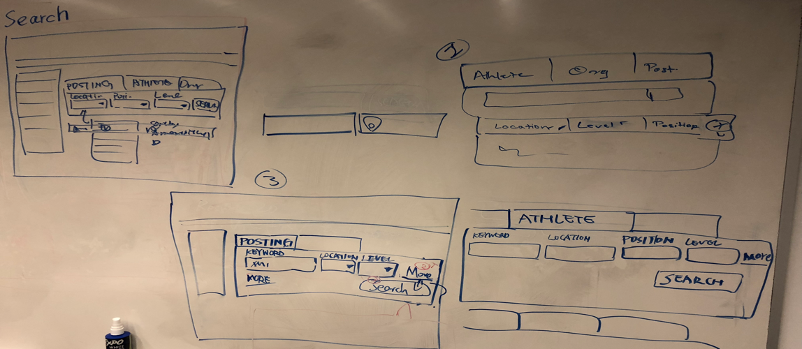
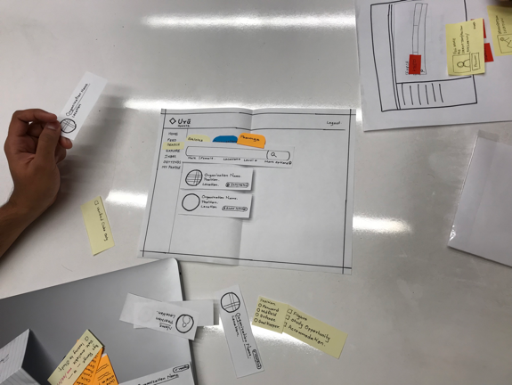

UMSI Design Clinic - Athletics
Client Summary
Our client was a website that connected athletes and teams across the globe. It aimed to provide athletes with opportunities to play abroad and the teams to fill up their rosters. The website also provided a social platform for athletes to share information and connect to each other. The website was mainly focused on field hockey players but aimed to grow into other sports as well.
The Problem
We were assigned to improve the usability of the Search Feature and the Profile Page representing the athlete.
Process

Scoping of the Project
An initial client meeting was conducted and the product was scoped. We were assigned to work on the Search and User Profile sections of the website.
Stakeholder Analysis
We conducted a stakeholder analysis before moving on the website and identified all the major stakeholders in the website.

Heuristic Evaluation
As the website was already live, we started by identifying major problem areas in the two assigned features. We conducted a heuristic evaluation and a competitive analysis of the website. The filters and the edit profile page were identified as the main flawed areas.
Result: Interaction Map, Major problem areas
Comparative Analysis(Feature Wise)
It was found that there was no direct competitor to the website thus we conducted a feature comparative analysis with websites having similar goals and design.
Result: Feature-wise comparative analysis and other models.
Sketching
We sketched our ideas based on different features obtained from the comparative analysis. I was responsible for sketching the Search feature. My sketch was inspired by the effective use of filters on various websites with similar goals. These filters were organized and represented to minimize the number of clicks for a user using the search function.
Result: Rough layout of sketches for Search and Profile Page 
User Recruitment
Users recruited were students looking to play field hockey professionally with an inclination to playing abroad. Our target audience was very specific and it was difficult to find users in a short span. We recruited users who were athletes who played other sports professionally as a substitute for field hockey players. We intended to know the mindset of players who had played or looking to play abroad.
Paper Prototype
Due to the time constraints we decided to go with a leaner approarch for the design process. We constructed the paper prototype earlier than usual.We redesigned the workflow of the website using the insights gathered from the heuristic evaluation and comparitive analysis. Sketched out the designs and constructed a low fidelity paper prototype.
Usability Testing + User Interviews + Paper Prototype Testing
We conduted the usability test (on the existing website), user interviews and the paper prototype test in one session per interviewee. Major flaws within the website were revealed during this test. It also gave us key insights and motivations about why and what a user looks for in a portal like our client's.
Result: Design Flaws and User motivations

Wireframes
We created version 2 of the paper prototype and conducted more tests to validate our design. This version of the paper prototype acted as the base for our wireframes. We built digital wireframes before moving on to build the final Hi-fi clickable prototype.
Digital Prototype
We built a high fidelity prototype from the wireframes created during the wireframing phase and paper prototyping. Modifications were made while building the Hi-Fi prototype considering the feedback from the paper prototype and the wireframing phase. A style guide was created to help the client to maintain consistency in future designs.
Results: Hi-Fi prototype and Style Guide
Final Deliverables
Then, we conducted usability tests on the Digital prototype to validate our design decisions and the final search and profile pages were provided to the client as the final deliverable.
Final Prototype - Search Page